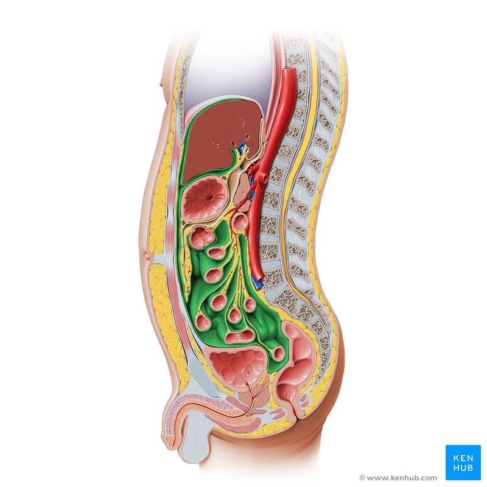
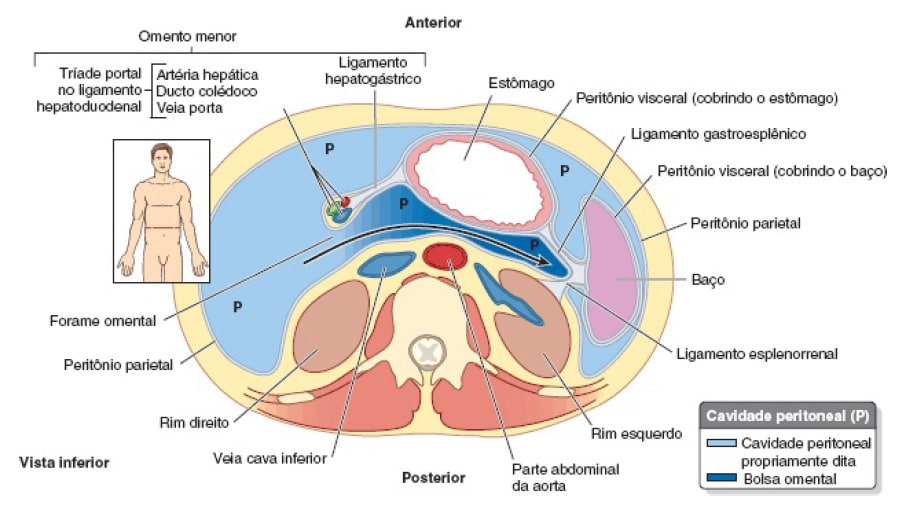
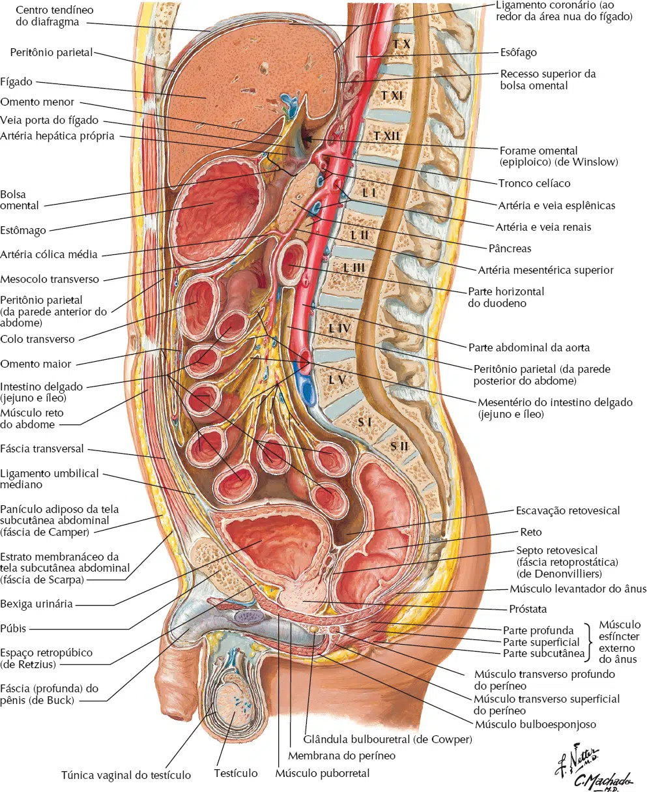
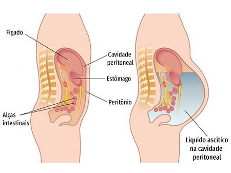
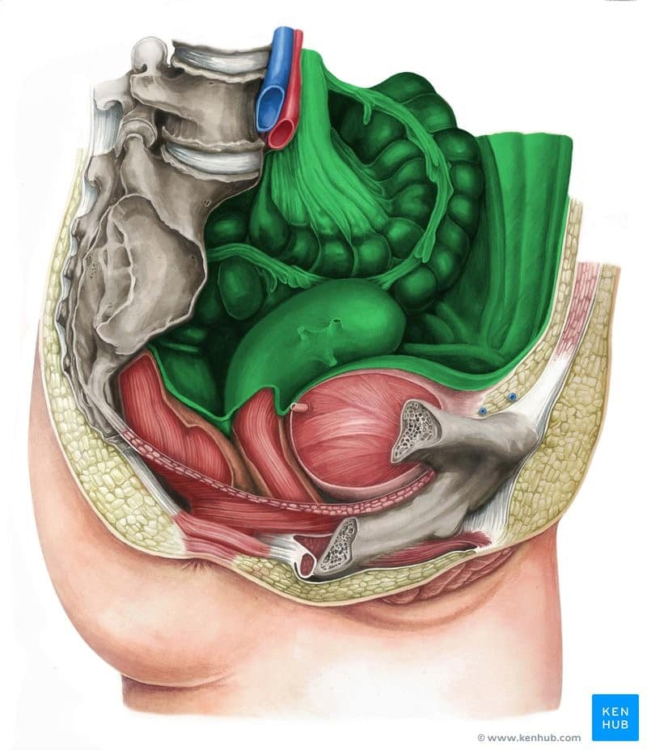
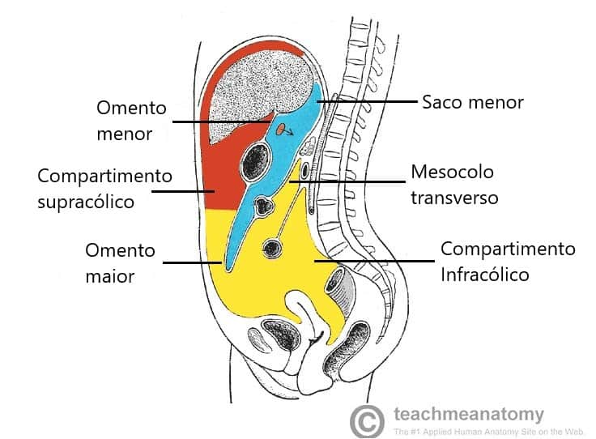
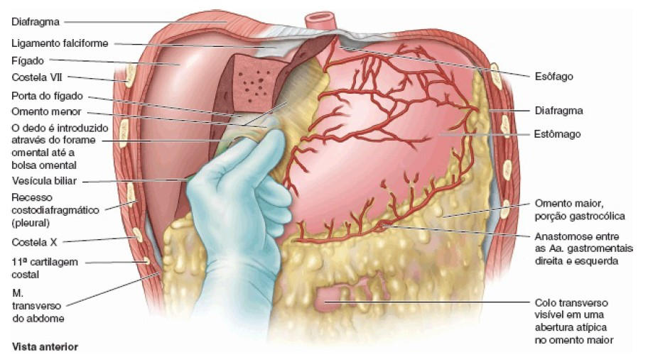

O peritônio é uma fina membrana serosa transparente, contínua, brilhante e escorregadia.
Reveste a cavidade abdominopélvica e recobre as vísceras.
As vísceras abdominais podem estar suspensas por dobras do peritônio (mesentérios) ou estão fora dessas dobras.
Órgãos suspensos pelo peritônio são referidos como intraperitoneais.
Órgãos fora dessa região de dobras peritoneais, com apenas uma superfície ou parte de uma superfície coberta por peritônio, são retroperitoneais.


São quase completamente cobertos por peritônio visceral.
Intraperitoneal neste caso não significa dentro da cavidade peritoneal (embora o termo seja usado clinicamente para
designar substâncias injetadas nessa cavidade).
Eles foram conceitualmente, se não literalmente, invaginados por uma camada de peritônio derivado do mesoderma, que forma um saco fechado.
Esses órgãos são:
Estão situados externamente ao peritônio parietal, e são apenas parcialmente cobertos por peritônio (geralmente apenas em uma face).
Órgãos retroperitoneais, como os rins, estão entre o peritônio parietal e a parede posterior do abdome e só têm peritônio parietal nas faces anteriores (não raro com uma quantidade variável de gordura interposta).
Do mesmo modo, a bexiga urinária subperitoneal só tem peritônio parietal em sua face superior.
Quando se desenvolvem e permanecem fora do peritônio, eles são órgãos primariamente retroperitoneais:
Outros órgãos retroperitoneais se desenvolvem dentro do peritônio, mas posteriormente movem-se para trás dele:

está dentro da cavidade abdominal e continua inferiormente até a cavidade pélvica.
A cavidade peritoneal é um espaço potencial com espessura capilar, situado entre as lâminas parietal e visceral do peritônio.
Não contém órgãos, mas contém uma fina película de líquido peritoneal, que é composto de água, eletrólitos e outras substâncias derivadas do líquido intersticial em tecidos adjacentes.
O líquido peritoneal lubrifica as faces peritoneais, permitindo que as vísceras movimentem-se umas sobre as outras sem atrito e permitindo os movimentos da digestão.
Além de lubrificar as faces das vísceras, o líquido peritoneal contém leucócitos e anticorpos que resistem à infecção.
Os vasos linfáticos, sobretudo na face inferior do diafragma, cuja atividade é incessante, absorvem o líquido peritoneal.
O acúmulo do excesso de líquido na cavidade peritoneal é denominado: Ascite.

A cavidade peritoneal é completamente fechada nos homens.
Nas mulheres, porém, há uma comunicação através das tubas uterinas, cavidade uterina e vagina.
Essa comunicação é uma possível via de infecção externa.

Após a rotação e o surgimento da curvatura maior do estômago durante o desenvolvimento, a cavidade peritoneal é dividida em sacos peritoneais maior e menor.
A cavidade peritoneal é a parte principal e maior.
O saco menor (também conhecido como bolsa omental) é menor e fica posterior ao estômago e ao omento menor.

O mesocolo transverso (mesentério do colo transverso) divide a cavidade abdominal em um compartimento supracólico, que contém o estômago, o fígado e o baço, e um compartimento infracólico, que contém o intestino delgado e os cólons ascendente e descendente.
O saco menor ou bolsa omental permite que o estômago se mova livremente contra as estruturas posteriores e inferiores a ele.
A bolsa omental comunica-se com a cavidade peritoneal por meio do forame omental ou também chamado forame epiplóico (de Winslow), uma abertura situada posteriormente à margem livre do omento menor (ligamento hepatoduodenal).
O forame omental pode ser localizado passando-se um dedo ao longo da vesícula biliar até a margem livre do omento menor.
